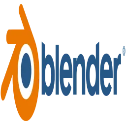

بلندر Blender – برنامج النمذجة ثلاثية الأبعاد
→ العودة للمصدر المفتوحبرنامج مجاني ومفتوح المصدر للنمذجة والتحريك والتصيير ثلاثي الأبعاد

نظرة عامة
بلندر هو أحد أقوى برامج النمذجة والتحريك ثلاثية الأبعاد في العالم، وهو مجاني ومفتوح المصدر بالكامل. يغطي بلندر كامل سير العمل ثلاثي الأبعاد بدءًا من النمذجة (Modeling) والتحريك (Animation) والتصيير (Rendering) وصولاً إلى تركيب المواد (Compositing) وتحرير الفيديو (Video Editing). كما يتميز بمحرك تصيير سيكلس (Cycles) الذي ينتج صورًا واقعية بجودة سينمائية.
تطور بلندر بشكل هائل في السنوات الأخيرة بفضل مجتمع المطورين النشط والدعم من الشركات الكبرى. الإصدارات الحديثة تضم ميزات متقدمة مثل نظام الجسيمات (Particles) والمحاكاة الفيزيائية (Physics Simulation) وأدوات النحت الرقمي (Sculpting) التي تضاهي برامج النحت المتخصصة مثل ZBrush.
يُستخدم بلندر في إنتاج الأفلام السينمائية وألعاب الفيديو والإعلانات التجارية والمعمارية الداخلية. من أشهر الأفلام التي استخدمت بلندر فيلم "Next Gen" على نتفلكس وفيلم "Spring" القصير. البرنامج متوفر على ويندوز وماك ولينكس بوزن تحميل صغير نسبيًا مقارنة بحجم إمكانياته.
المميزات الرئيسية
- أدوات نمذجة متقدمة تشمل النمذجة المضلعة (Polygon Modeling) والنحت الرقمي (Sculpting) والنمذجة المنحنية (Curve Modeling) مع أحدث تقنيات التعديل غير المدمر (Non-destructive Editing).
- محركا تصيير مدمجان: Cycles للتصيير الواقعي بأسلوب التتبع الضوئي (Ray Tracing) وEEVEE للتصيير الفوري (Real-time Rendering) بجودة عالية.
- نظام تحريك كامل (Rigging & Animation) مع دعم العظام (Armatures) والمفاتيح (Shape Keys) والإطارات المفتاحية والرسوم المتحركة غير الخطية عبر محرر NLA.
- محرك ألعاب مدمج (قيد التطوير حاليًا) ومجموعة متكاملة من أدوات الفيديو والتركيب والمؤثرات البصرية.
لماذا تختار بلندر؟
بلندر هو الخيار الأمثل لأي شخص يريد العمل في مجال الرسوم ثلاثية الأبعاد دون دفع آلاف الدولارات لتراخيص البرامج التجارية. فهو يقدم نفس الإمكانيات التي تقدمها برامج مثل Maya و3ds Max وCinema 4D، بل يتفوق عليها في بعض الجوانب. مجتمع بلندر ضخم ومتعاون، وهناك آلاف الدروس المجانية على يوتيوب ومنصات التعليم.
البرنامج يتطور بسرعة مذهلة، حيث يصدر إصدار جديد كل بضعة أشهر بميزات وتحسينات كبيرة. بالإضافة إلى ذلك، يدعم بلندر عددًا هائلًا من الإضافات (Add-ons) التي توسع إمكانياته بشكل لا نهائي، معظمها مجاني أيضًا.
ابدأ الآن
قم بزيارة الموقع الرسمي: blender.org
بلندر هو برنامج مجاني ومفتوح المصدر بالكامل. لا اشتراكات ولا تكاليف خفية.